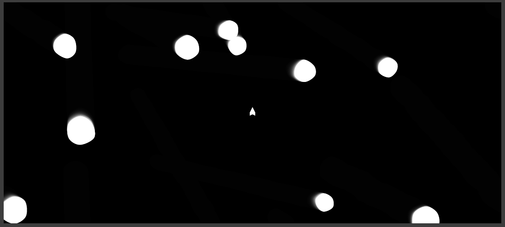

This is an adaptation of the classic game Asteroids that I made in processing and
later converted to javascript. In this version of the game, the asteroids have
been replaced by cells that grow and eventually split. The player avoids the
cells with their ship and can force the cells to split by shooting them. If a cell
splits and is too small, it dies. The cells' outline is animated by moving control
points with perlin noise and drawing a curved line through these points.